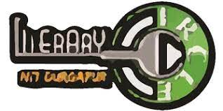
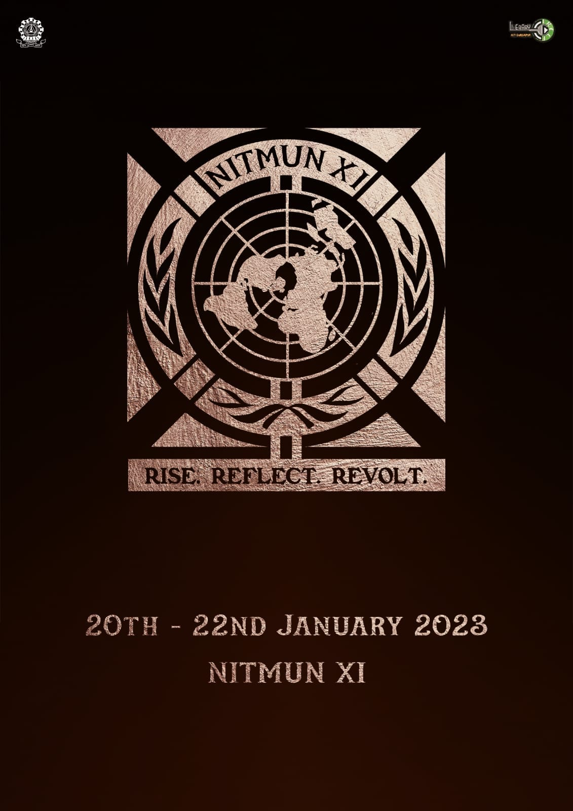
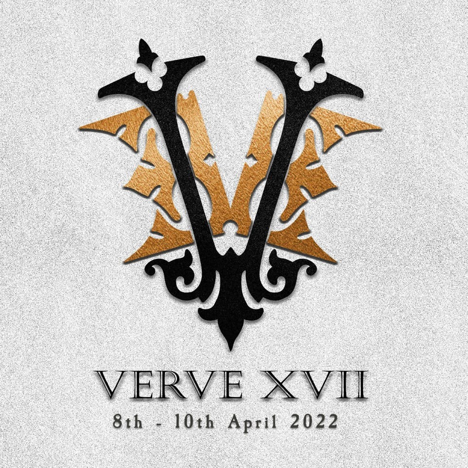
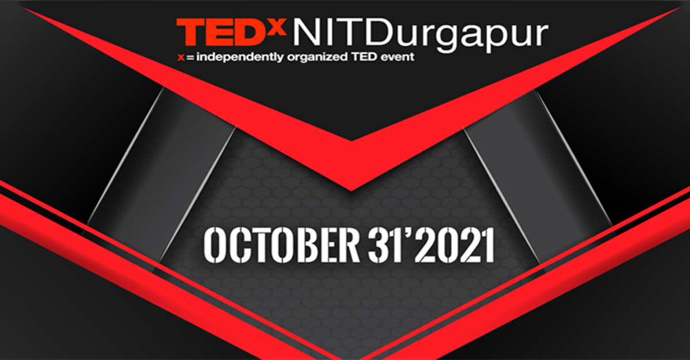
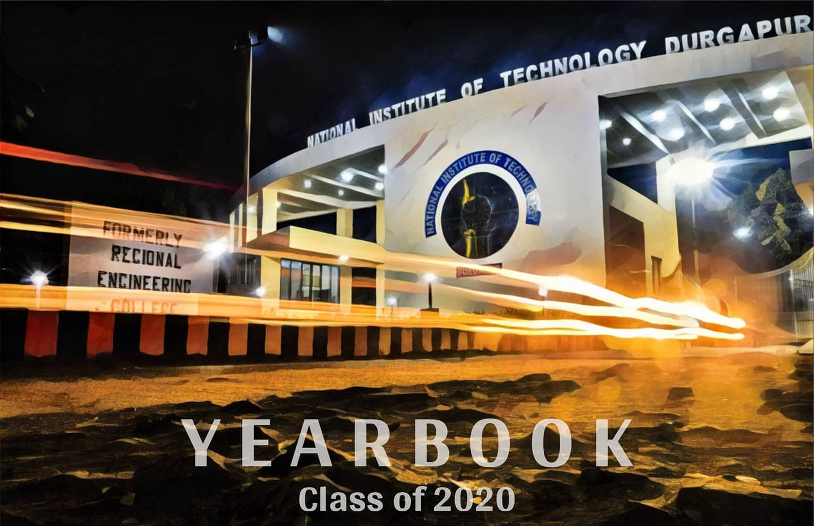
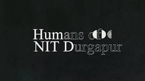
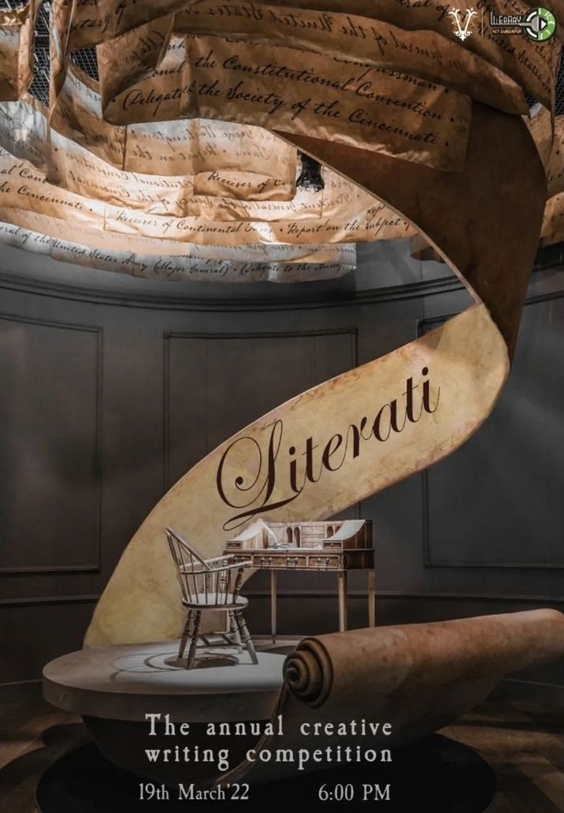

Welcome to The Literary Circle club's website Of NIT Durgapur
The Official LITERATURE CLUB of NIT DURGAPUR
Literary Circle is the official literary club of NIT Durgapur, which gives the college an extra dimension of creative expression in the midst of technical unilateralism.

Events section
This club conducts Verve, the Literary cum Youth Festival of the college and the biggest of its kind in eastern India having successfully pulled off 14 editions of the same. Among other activities, the club is reputed for hosting the inter-college NITMUN, publishing annual magazine Deja Vu and YearBook and organising OpenMic and Literati year round.
The Literary circle takes pride in conducting the following events :-

NITMUN - Model United Nations conference
An event mimicking the United nations conference with each participant representing their assigned country as a delegate , the sparks of debate blaze on as they put forth their opinions and objectives of the topic at stakes .

Verve - The annual Literary festival of NIT Durgapur
This fest hosts a various range of events from intriguing treasure hunt , Trill - mobile photography challenge , Behind the scenes (BTS) , star talk and public speaking , Open mic and many more surprise events .

TEDx - NIT Durgapur
TEDx , An independently organised TED talk , organised Together by 2 clubs in NIT Durgapur in which a major part is played by The Literary Circle .

YEARBOOK
An initiative of the literary circle , this book is a souvenier for the final years containing all the memories for the time they spent at this college during these 4 years.

Humans of NIT Durgapur
This new venture of the literary club explores the unknown sides of common people , showing the things that are usually left unnoticed or unknown . This truly stays as an example for the statement "Every person is unique in their own way "

Literati
The annual creative writing competition organised by literary circle , providing a space for everyone to unleash their creativity through writing .
Apart from conducting events , we have a blog , a space to showcase the chunks of thoughts that strike us , in a creative way , visit it at :- The Darkest White official blog of The Literary Circle